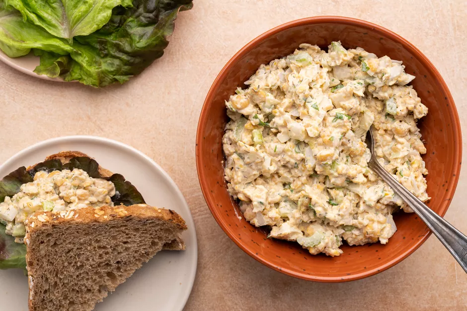

Vegan Tuna Salad3

What can I say it is the tuna salad we all know and love but this time it is vegan and deliciously animal cruelty free.
Blend olive oil and soy milk together in a blender until thickened. Add salt, sugar, and mustard; turn on blender and drizzle vinegar through the opening in the lid until mixture is smooth. Add chickpeas, pickles, celery, onion, and dill; blend until mixture is evenly chopped.
Ingredients
- ½ cup olive oil
- ¼ cup soy milk
- 1 teaspoon sea salt
- 1 teaspoon white sugar
- 1 teaspoon Dijon mustard
- 1 teaspoon rice vinegar
- 1 cup drained canned chickpeas (garbanzo beans)
- ½ cup chopped dill pickles
- 1 stalk celery
- ¼ cup dried chopped onion
- 1 teaspoon dried dill weed
Steps
- Blend olive oil and soy milk together in a blender until thickened.
- Add salt, sugar, and mustard
- Turn on blender and drizzle vinegar through the opening in the lid until mixture is smooth.
- Add chickpeas, pickles, celery, onion, and dill
- Blend until mixture is evenly chopped.